Cost and Performance Engineering for AI
The $30K/Day Surprise
A fintech company launched a GenAI-powered feature, and it was an instant hit. Users loved the experience, adoption curves looked beautiful, and the product team was celebrating. Then the first month’s AI infrastructure bill arrived: $900,000. The feature had generated roughly $200,000 in revenue during the same period. The CFO was, to put it diplomatically, not amused.
This story is not apocryphal. Variations of it play out at companies of every size, from startups burning through their seed round to enterprises discovering a six-figure line item that nobody budgeted for. The fundamental problem is that AI costs behave differently from traditional software costs. In a conventional application, your compute bill scales with traffic in a relatively predictable way — more users mean more CPU cycles, more database queries, more bandwidth. With LLM-based features, costs scale not just with traffic but with the complexity of each interaction. A single request can cost a fraction of a cent or several dollars, depending on the model, the length of the prompt, and how much context you’re dragging along for the ride.
This chapter is here to make sure the fintech horror story doesn’t happen to you. We’ll walk through how AI costs actually work, where the hidden expenses lurk, and — most importantly — the concrete engineering strategies that can reduce your AI bill by 50 to 90 percent without sacrificing the user experience.
Understanding AI Costs
LLM API Pricing (How You Pay)
LLM APIs charge per token, which you can think of as roughly one word or word-fragment. Every request has two sides: the input tokens (your prompt, system instructions, and any context you send) and the output tokens (the model’s response). Both sides have their own price, and output tokens are almost always more expensive than input tokens because generating text requires more computation than reading it.
The pricing landscape shifts frequently, but the table below captures the general order of magnitude you should expect from major providers. The key insight isn’t the specific numbers — those will change — but the dramatic range between models.
| Model | Input Cost (per 1M tokens) | Output Cost (per 1M tokens) |
|---|---|---|
| GPT-4o | $2.50 | $10.00 |
| Claude Sonnet | $3.00 | $15.00 |
| Claude Haiku | $0.25 | $1.25 |
| Gemini Flash | $0.075 | $0.30 |
| Llama 70B (self-hosted) | ~$0.50* | ~$0.50* |
*Self-hosted costs depend on GPU pricing and utilization.
Notice the spread here. The difference between the most capable models and the lightweight ones is not two or three times — it can be 30x or more. That ratio is the entire foundation of the cost optimization strategies we’ll discuss later in this chapter. If you can figure out which requests actually need the expensive model and which ones can be handled perfectly well by a cheaper alternative, you’ve already won most of the battle.
The Cost Equation
The fundamental cost equation for any LLM-powered feature is straightforward, even if the numbers it produces can be startling.

Let’s make this concrete with a real example. Imagine you have a customer-facing feature that handles 100,000 requests per day, with an average of 2,000 tokens per request (that includes both the prompt and the response), and you’re using GPT-4o for output generation at $10 per million tokens. That works out to 100,000 times 2,000 times $0.00001, which gives you $2,000 per day or roughly $60,000 per month. That’s a meaningful line item on anyone’s P&L.
Now take that exact same workload and run it through Gemini Flash instead. The math becomes 100,000 times 2,000 times $0.0000003, which lands you at about $60 per day or $1,800 per month. The model choice alone produced a 33x cost difference — same traffic, same feature, same user experience (assuming the cheaper model can handle the task adequately), but a difference of nearly $58,000 per month.
This is why model selection is not a purely technical decision. It’s a business decision with enormous financial implications, and it deserves the same rigor you’d apply to any other major infrastructure investment.
Hidden Costs
Beyond the obvious per-token charges, there are several cost drivers that tend to sneak up on teams. These are the expenses that don’t show up in a quick back-of-the-envelope calculation but absolutely show up on the invoice.
| Cost | What It Is | How to Control |
|---|---|---|
| System prompt tokens | Your system prompt is sent with every request | Keep system prompts concise. Cache when possible. |
| RAG context tokens | Retrieved documents pad every request | Retrieve fewer, more relevant chunks |
| Conversation history | Multi-turn chats grow token count every turn | Summarize or truncate old messages |
| Retries | Failed requests cost money and fail again | Implement exponential backoff with budget caps |
| Evaluation | LLM-as-judge evaluations use tokens too | Sample evaluations, don’t evaluate everything |
System prompts are particularly insidious because they feel like a one-time configuration, but they’re actually repeated with every single API call. If your system prompt is 2,000 tokens long and you’re making 100,000 requests per day, that’s 200 million tokens per day just on instructions that never change. Conversation history is another silent budget killer — in a multi-turn chat, every previous message gets resent with every new turn, which means your token count grows quadratically with conversation length if you’re not careful. And retries are the cruelest hidden cost of all, because you’re paying full price for requests that produce no value.
Cost Optimization Strategies
Strategy 1: Model Tiering
This is, without question, the single most impactful cost optimization technique available to you. The idea is beautifully simple: instead of routing every request to your most capable (and most expensive) model, you analyze the difficulty of each request and send it to the cheapest model that can handle it well.

In practice, the distribution above is remarkably common. The vast majority of requests to most AI features are straightforward: FAQ-style questions, simple lookups, basic text formatting, and routine classification tasks. These don’t need a frontier model — a fast, cheap model handles them just as well, often faster. Only a small percentage of requests genuinely require the reasoning depth of a top-tier model.
Typical savings from model tiering run between 60 and 80 percent compared to sending everything to your best model. The implementation can be as simple as a keyword-based router or as sophisticated as a lightweight classifier trained on your own request data. Start simple — even a rule-based approach that looks at query length and keyword complexity can capture most of the value — and refine over time as you gather data on which requests actually need the more powerful models.
Strategy 2: Prompt Optimization
Every token in your prompt costs money, and that cost is multiplied by every request you serve. This makes prompt engineering not just a quality concern but a direct cost optimization lever. A shorter prompt that achieves the same output quality is literally cheaper to run, and the savings compound across millions of requests.
| Before | After | Savings |
|---|---|---|
| 2000-token system prompt | 500-token system prompt | 75% input cost reduction |
| 10 RAG chunks retrieved | 3 re-ranked chunks | 70% context cost reduction |
| Full conversation history | Sliding window of 5 turns | Caps per-request cost |
Think of your system prompt as a piece of code that runs on every request. You wouldn’t leave dead code or verbose comments in a hot loop, and you shouldn’t leave unnecessary instructions in a system prompt either. Go through it line by line and ask: does removing this sentence change the output quality? Often, you’ll find that half the instructions are redundant, overly specific, or addressing edge cases that never actually occur in production.
RAG context optimization deserves special attention because it compounds with query volume. Most naive RAG implementations retrieve far more chunks than the model actually needs. By adding a re-ranking step — where you score the retrieved chunks by relevance and only pass the top few to the model — you can dramatically cut input tokens while often improving response quality, because the model has less noise to sift through. It’s one of those rare optimizations where cheaper and better go hand in hand.
Strategy 3: Caching
If two users ask the same question, should you really call the LLM twice? Caching is the practice of storing and reusing LLM responses for identical or semantically similar requests, and it can deliver substantial savings depending on the repetitiveness of your workload.
| Cache Type | Hit Rate | Implementation |
|---|---|---|
| Exact match | 5-20% | Hash the full prompt, return cached response |
| Semantic | 20-50% | Embed the query, find similar cached queries |
| Provider-level | Varies | OpenAI/Anthropic prompt caching (automatic) |
Exact-match caching is the simplest to implement — you hash the full prompt text and check whether you’ve seen it before — but it only catches truly identical requests. Semantic caching is more powerful: you embed the incoming query, compare it against a vector store of previously answered queries, and return a cached response if the similarity score is above a threshold. This catches paraphrases and minor variations, which dramatically improves your hit rate.
Anthropic’s prompt caching feature deserves a special mention because it operates at the provider level and requires almost no engineering effort on your side. If your system prompt and RAG context are the same across requests — which they often are for a given user session or feature — Anthropic caches the processed prefix server-side and gives you a 90 percent discount on those cached input tokens. The practical implication is that you should design your prompts to maximize the cacheable prefix: put your system instructions and static context at the beginning, and put the variable, user-specific content at the end.
Strategy 4: Async and Batch
Not every AI workload needs to run in real time. This is an important distinction that many teams overlook in the rush to build user-facing features. Batch processing — where you accumulate requests and process them in bulk — typically comes with a significant discount from API providers, often around 50 percent off the real-time price.
| Mode | Cost | Latency | Use Case |
|---|---|---|---|
| Real-time | Full price | Low | User-facing chat |
| Batch | 50% discount | Hours | Document processing, reports |
| Async queue | Full price but controlled | Seconds-minutes | Background enrichment |
The rule of thumb is straightforward: if the user isn’t sitting there waiting for the response, use batch processing. Document summarization, data enrichment, report generation, content classification at scale — all of these are perfect candidates for batch mode. Even if you need results within a few hours rather than milliseconds, the batch discount makes it worth structuring your pipeline to accumulate and process work in bulk.
Async queuing sits in between real-time and batch. You process requests at full price, but you control the throughput, which lets you smooth out traffic spikes, implement rate limiting, and avoid the costly scenario where a sudden surge in requests overwhelms your rate limits and triggers expensive retry cascades. Think of it as a shock absorber for your AI costs.
Strategy 5: Self-Hosting
At sufficiently high volumes, running your own model infrastructure can be cheaper than paying per-token API prices. But “sufficiently high” is doing a lot of heavy lifting in that sentence, and the total cost of self-hosting extends well beyond GPU rental.
Let’s look at a rough break-even analysis. If you’re making 1 million requests per day at $3 per million tokens, your API cost is approximately $6,000 per day or $180,000 per month. Self-hosting a Llama 70B model on four H100 GPUs in a major cloud provider runs roughly $100,000 per month. On paper, that’s a clear win at this volume — you’d save $80,000 per month.
But the paper analysis leaves out significant costs. You need ML engineers to set up and maintain the serving infrastructure. You need to handle model updates, security patches, and GPU driver compatibility issues. You need monitoring, alerting, and on-call rotation for your inference servers. You need to manage scaling for traffic fluctuations. All of these are real costs that can easily eat into or eliminate that $80,000 savings if your team isn’t already equipped for this kind of operational work.
The architect’s rule I recommend is this: self-host only when your monthly API spend consistently exceeds $50,000 AND you already have ML engineering staff on the team who are comfortable with GPU infrastructure. If either condition isn’t met, stick with APIs — the operational simplicity is worth the premium.
Performance Optimization
Latency Components
Understanding where latency comes from is essential to reducing it. LLM request latency is not a single monolithic number — it’s the sum of several distinct components, each with its own optimization levers.
Total Latency = Network + Queue Wait + Prefill (input processing) + Generation (output tokens)| Component | Typical | How to Reduce |
|---|---|---|
| Network | 20-50ms | Use provider’s nearest region |
| Queue wait | 0-500ms | Provision throughput, use priority tiers |
| Prefill | 100-500ms | Shorter prompts, prompt caching |
| Generation | 500ms-30s | Fewer output tokens, streaming, faster model |
The generation phase typically dominates total latency because LLMs produce tokens sequentially — each token depends on all the tokens that came before it. This means that a response of 500 tokens takes roughly 500 sequential generation steps, and there’s no way to parallelize that within a single response. The practical implication is that asking for shorter, more focused responses is one of the most effective latency optimizations you can make. If you can get the model to answer in 200 tokens instead of 800, you’ve cut your generation time (and your output token cost) by 75 percent.
Streaming
One of the most impactful performance optimizations for user-facing applications has nothing to do with making the model faster — it’s about changing how you deliver the response. Instead of waiting for the entire response to be generated and then sending it all at once, you stream tokens to the user as they’re produced by the model.
The effect on perceived performance is dramatic. Without streaming, the user stares at a loading spinner for 5 to 30 seconds (depending on response length) before seeing anything. With streaming, the first token appears in 200 to 500 milliseconds, and the response flows onto the screen in real time, much like watching someone type. The total time to complete the response is the same, but the user experience is radically better because there’s immediate feedback.
Implementation is straightforward: most LLM providers support Server-Sent Events (SSE) for streaming responses. Your backend opens a streaming connection to the provider, and forwards tokens to your frontend as they arrive, typically over a WebSocket or SSE connection of its own. Every major LLM provider supports this natively, so there’s really no reason not to use it for any user-facing feature.
Parallel Requests
When your application needs to perform multiple AI operations on the same input — say, summarizing a document, extracting entities, and analyzing sentiment — the naive approach of running them sequentially is leaving performance on the table. Since these operations are independent of each other, they can run in parallel, and the total latency drops from the sum of all operations to the duration of the slowest one.
# Sequential: 3 × 2s = 6s total
summary = await llm.summarize(doc)
entities = await llm.extract_entities(doc)
sentiment = await llm.analyze_sentiment(doc)
# Parallel: max(2s, 2s, 2s) = 2s total
summary, entities, sentiment = await asyncio.gather(
llm.summarize(doc),
llm.extract_entities(doc),
llm.analyze_sentiment(doc)
)This pattern shows up constantly in production AI systems. Document processing pipelines, multi-faceted analysis features, and agentic workflows all tend to involve multiple independent LLM calls that can run concurrently. The only caveat is that parallel requests increase your instantaneous throughput demand on the API provider, so make sure your rate limits can accommodate the burst. But the latency improvement — going from 6 seconds to 2 seconds in the example above — is well worth it.
Speculative Execution
This is a more advanced technique borrowed from CPU architecture, where processors execute instructions before they’re certain to be needed. In the LLM context, speculative execution means starting expensive operations in advance based on a prediction of what will be needed next.
For example, while the LLM is generating a response to the user’s current question, you might speculatively retrieve follow-up context from your RAG pipeline based on the topic of the conversation. If the user does ask a follow-up question, you’ve already got the context warm and ready. If they don’t, you’ve wasted a small amount of compute on the retrieval — but retrieval is typically cheap compared to LLM inference, so the expected value of the speculation is positive.
This technique requires good intuition about user behavior patterns and careful cost-benefit analysis, but in the right scenarios, it can make multi-turn interactions feel remarkably snappy.
Cost Monitoring Dashboard
You cannot optimize what you do not measure, and AI costs have a well-documented tendency to spike without warning. A sudden change in user behavior, a prompt regression that increases output length, or a broken caching layer can double or triple your daily spend before anyone notices. That’s why a real-time cost monitoring dashboard isn’t a nice-to-have — it’s essential infrastructure for any production AI system.
Whether you build this yourself or use a third-party observability platform, make sure you’re tracking the following metrics at the granularities and alert thresholds indicated.
| Metric | Granularity | Alert When |
|---|---|---|
| Total spend | Daily | Exceeds daily budget |
| Cost per request | Per endpoint | Exceeds threshold |
| Token usage | Per model, per team | Unusual spike |
| Cache hit rate | Hourly | Drops below target |
| Model distribution | Daily | Too many requests to expensive model |
| Error rate | Hourly | Paying for failed requests |
The cache hit rate metric is particularly important to watch because caching is often the most fragile optimization. A code change that slightly alters prompt formatting can crater your cache hit rate overnight, and if nobody’s watching that metric, you won’t know until the monthly bill arrives. Similarly, model distribution tracking helps you catch drift in your tiering logic — if your router starts sending 40 percent of traffic to the expensive model instead of the expected 5 percent, you want to know about it the same day, not the same month.
Real-World Cost Optimization Case Study
Let’s walk through a concrete example that ties all of these strategies together. An enterprise customer service platform was running their AI-assisted support feature entirely on GPT-4, with no optimization whatsoever. Here’s what their setup looked like and what happened when they systematically applied the strategies from this chapter.
Before optimization, the picture was grim. Every single request — whether a simple greeting or a complex technical troubleshooting question — was routed to GPT-4, resulting in a monthly bill of $45,000. There was no caching layer, so every request was processed fresh even if ten users asked the same question in the same hour. The system prompt had grown organically to 3,000 tokens as different team members added instructions over time. And the RAG pipeline was retrieving 10 chunks per request with no re-ranking, stuffing the context window with marginally relevant content.
┌─────────────────────────────────────────────────────────────────┐
│ Cost Optimization Waterfall — Real Example │
│ │
│ $45,000 ┤ ████████████████████████████████████████████████████ │
│ │ │
│ │ Model Tiering (−65%) │
│ │ Route 70% → Haiku, 25% → Sonnet, 5% → Opus │
│ $15,750 ┤ ████████████████████ │
│ │ │
│ │ Semantic Caching (−25%) │
│ │ 30% cache hit rate │
│ $11,813 ┤ ███████████████ │
│ │ │
│ │ Prompt Pruning (−15%) │
│ │ 3,000 → 800 token system prompt │
│ $10,040 ┤ █████████████ │
│ │ │
│ │ RAG Optimization (−20%) │
│ │ 10 chunks → 3 re-ranked chunks │
│ $8,032 ┤ ██████████ │
│ │ │
│ ├───────────────────────────────────────────────────────│
│ │ Total Savings: 82% ($45K → $8K/month) │
│ │ User Satisfaction: Unchanged │
│ │ Engineering Time: 3 weeks │
└─────────────────────────────────────────────────────────────────┘The optimization effort took about three weeks of engineering time and produced the following results. Model tiering — routing 70 percent of requests to Haiku, 25 percent to Sonnet, and only 5 percent to Opus — reduced costs by 65 percent. Adding a semantic response cache with a 30 percent hit rate saved another 25 percent. Pruning the system prompt from 3,000 to 800 tokens contributed a 15 percent reduction. And optimizing the RAG pipeline to retrieve only 3 re-ranked chunks instead of 10 saved an additional 20 percent.
The combined result was a drop from $45,000 per month to $8,000 per month — an 82 percent reduction. And here’s the part that makes this story truly satisfying: user satisfaction scores remained unchanged. The customers didn’t notice the difference, because the vast majority of their interactions were simple enough that the cheaper model handled them just as well. The small percentage of complex cases that required the premium model still got it, thanks to the tiering logic.
Key Takeaways
- Model choice is far and away your biggest cost lever — the difference between the most expensive and cheapest models can be 10x to 100x, which means selecting the right model for each workload is the single most important cost decision you’ll make.
- Model tiering, where you route requests to the cheapest model capable of handling them, typically saves 60 to 80 percent of your AI spend because the reality is that most requests simply don’t need a frontier model.
- Prompt optimization and caching deliver compounding savings of 15 to 30 percent each, and they have the added benefit of often improving response quality and latency at the same time.
- Batch processing should be your default for any workload where the user isn’t actively waiting for the result, because the 50 percent discount from most providers is essentially free money for non-real-time tasks.
- Daily cost monitoring is non-negotiable in production — AI costs can spike dramatically and silently, and catching a runaway cost driver on day one versus day thirty is the difference between a minor incident and a budget-breaking surprise.
Companion Notebook
 — Build a cost
calculator for your AI workload. Model different scenarios: model
tiering, caching strategies, batch vs. real-time. See the dollar impact
of each optimization.
— Build a cost
calculator for your AI workload. Model different scenarios: model
tiering, caching strategies, batch vs. real-time. See the dollar impact
of each optimization.